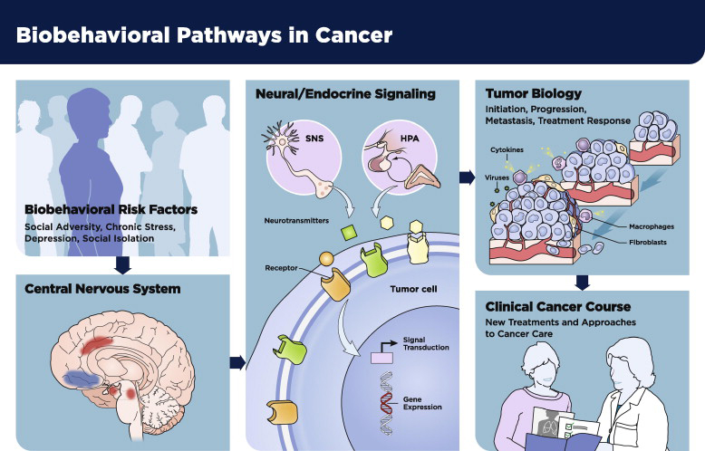

NCI Network on Biobehavioral Pathways in Cancer
Through an ongoing Request for Proposals (RFP) issued by Leidos Biomedical Research, Inc., the Network solicits proposals for small-scale pilot projects to advance the knowledge of molecular pathways that link psychological, behavioral, or social factors to cancer biology. These projects inform further research opportunities to develop effective interventions and improve clinical outcomes.
Scientific Steering Committee
Overview
The National Cancer Institute Network on Biobehavioral Pathways in Cancer (NBBPC) accelerates the translation and communication of biobehavioral discoveries to advance clinical cancer care.
NBBPC is a consortium designed to support knowledge of the molecular and signaling pathways that link psychological, behavioral, and social factors to cancer biology and apply that knowledge toward the development of efficacious interventions to reduce cancer risk and improve clinical outcomes. NBBPC has specific interest in proof-of-concept basic and translational studies to control disease in cancer patients, prevent recurrence post-treatment, and augment disease-free survival.
Mission
The Network fosters research excellence through the integration and dissemination of relevant scientific discoveries and the identification, support, and communication of new research directions in the field of biobehavioral pathways in cancer.
Network Priorities
- Stimulate novel scientific concepts and paradigms
- Foster innovative collaborations between diverse disciplines
- Disseminate relevant discoveries through major scientific conferences and meetings
- Accelerate the translation of discoveries to patient benefit
- Synthesize the state of the science, analyze secondary data, and publish
- Encourage established scientists to apply their expertise to this emerging area of research
- Cultivate the education, training, and professional advancement of early career scientists
Heuristic framework for research on biobehavioral risk factor influences on clinical cancer course.
Green, P., O’Connell, M., & Lutgendorf, S.K. (2013). Psychoneuroimmunology and cancer: A decade of discovery, paradigm shifts, and methodological innovations. Brain, Behavior, and Immunity, 30, S1-S9.
Pilot Project Descriptions
Scroll over each title for a description.
Members
NBBPC members provide the following:
- Foster the discovery-to-translation continuum of research related to biobehavioral pathways in cancer;
- Focus on unmet, understudied, highly exploratory questions that can’t yet be addressed through the submission of a research project grant application to NCI; and
- Develop and conduct proof of concept/principal/feasibility studies in support of the near term submission of research project grant applications to NCI.
The Network leverages and integrates expertise in cancer, stress, and cell biology; neuroscience; health behavior; psychology; social science; and oncology to advance the understanding of biological pathways that link behavioral processes and cancer.
The Network supports research in brain pathways that underlie psychological and social experiences, and their neurobiological impact on cancer via the sympathetic nervous system.
Scientific Steering Committee
Linda Alexander, PhD 
Associate Professor of Health Behavior
University of Kentucky College of Public Health
Steve Cole, PhD 
Associate Professor
David Geffen School of Medicine
University of California, Los Angeles
Susan K. Lutgendorf, PhD 
Professor & Starch Faculty Fellow
Department of Psychology
University of Iowa
Paige Green, PhD, MPH
Chief
Basic Biobehavioral and Psychological Sciences Branch
National Cancer Institute
Anil K. Sood, MD 
Director, Professor
Dept. of Gynecologic Oncology and Cancer Biology
M.D. Anderson Cancer Center
NBBPC Members
Michael H. Antoni, PhD
Shamgar Ben-Eliyahu, PhD
Nathan A. Berger, MD
Julienne Bower, PhD
Erin Costanzo, PhD
Naomi Eisenberger, PhD
Wenwei Hu, PhD
Jennifer M. Knight, MD
Don Lamkin, PhD
Kelley S. Madden, PhD
Tor Wager, PhD
For inquiries about the Network mission and scientific scope, contact: Paige Green, NCI 240-276-6899 | greenpa@nih.gov
For inquiries about the funding schedule, contact: Alex Konev, Leidos Biomedical Research, Inc. 301-228-4323 | alex.konev@nih.gov